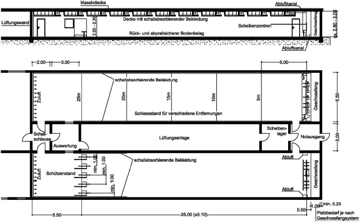
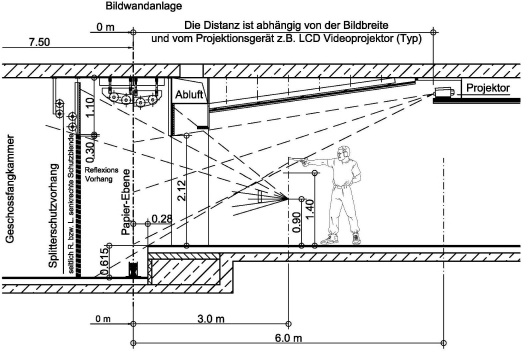
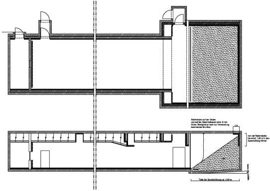
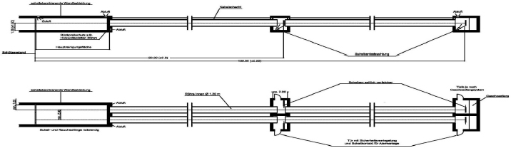
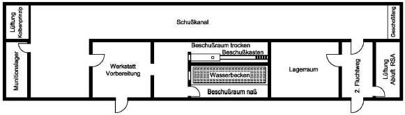
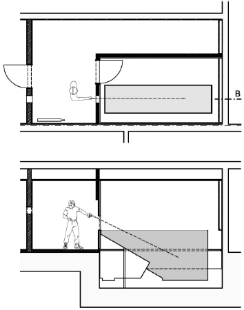
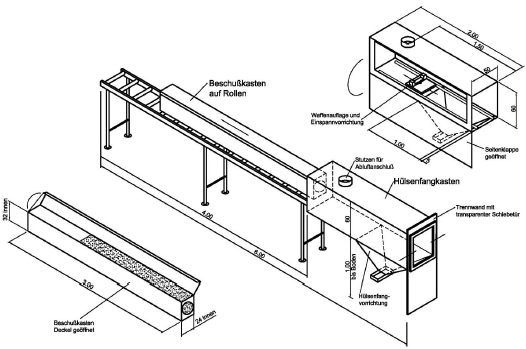
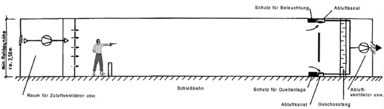
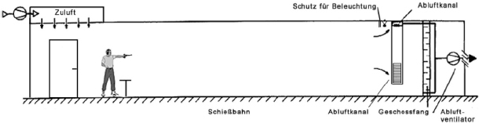

5.1 Allgemeines
Eine Raumschießanlage (RSA) besteht aus dem Schießstand sowie weiteren Räumen wie z. B. Schallschutzschleuse, Räumlichkeiten für die raumlufttechnische Anlage (RLT-Anlage), Aufenthaltsraum und Räumen zur Aufbewahrung von Waffen, Munition und Gerät. Diese Räume umfassen den Begriff der Schießstätte im Sinne des Waffengesetzes, sofern sie einen funktionalen Bezug zum Schießen besitzen.
Bei der Planung und Errichtung von RSA ist § 22 BImSchG zu beachten. Geschlossene Schießstände können sowohl oberirdisch als auch unterirdisch für alle Arten von Schusswaffen errichtet sein. Eine Besonderheit dabei bilden Schießstände, bei denen durch Rohre bzw. Röhren geschossen wird.
Geschlossene Schießstände für Schusswaffen bis zu einer E0 von 7,5 J, deren Geschosse mit kalten Gasen angetrieben werden und Zimmerstutzen im Kaliber ≤ 4,65 mm werden in Nummer 3 behandelt. Auf diese sind die folgenden Vorgaben nicht anzuwenden.
Bei bestehenden RSA können im Rahmen der Regelüberprüfungen die Vorgaben bzgl. Material und Festigkeiten dieser Richtlinie im eingebauten Zustand oftmals nicht vollständig geprüft werden. In diesen Fällen hat der SSV durch eine Sichtprüfung des Ist-Zustandes der Bauteile eine sicherheitstechnische Bewertung durchzuführen.
Je nach Art der Nutzung von RSA ist zu unterscheiden zwischen:
Beim stationären Schießen nutzen die Schützen feste Schützenpositionen in einem Schützenstand, wobei unterschiedliche Scheibenentfernungen z. B. durch Zwischenhalte der Scheiben in der Schießbahn möglich sind.
Beim Mehrdistanzschießen werden auf Zwischenentfernungen der Schießbahnlänge unterschiedliche Schützenpositionen stationär genutzt, das heißt die Schützen gehen in der Schießbahn von Position zu Position vor (z. B. Schießen auf 25 m, 20 m, 15 m und 10 m) und schießen auf jeweils konstante Scheibenentfernungen.
Beim dynamischen Mehrdistanzschießen bewegt sich der Schütze in der Schießbahn (deshalb "bewegungsorientiertes Schießen") und beschießt Scheiben auf unterschiedliche Scheibenentfernungen, u. U. unter Nutzung mobiler Geschossfänge (Nummer 2.8.5.8). Auch die Ausbildung in der Verteidigung mit Schusswaffen nach § 22 AWaffV (sog. Verteidigungsschießen) ist hier einzuordnen.
Bei sog. Schießkinos (Zieldarstellung durch Bildwandtechnik) ist eine Geschossfangkammer erforderlich.
Die Vorgaben nach Nummer 5.1 beziehen sich auf das stationäre Schießen, für die anderen oben genannten Schießübungen sind ergänzende Vorschriften nach Nummer 5.2 bis 5.4 zu beachten.
Die durch direkten Beschuss gefährdeten Wände, Decken und Böden sind durchschusssicher gemäß Baustoffe nach Nummer 2.7 auszuführen, sofern die Tragwerksplanung bzw. statische Auslegung keine höheren Anforderungen verlangt.
5.1.1 Abmessungen
Der Schießstand besteht aus:
Die einzuhaltenden Abmessungen der Schützenpositionen ergeben sich aus Nummer 2.2, die Scheibenentfernungen mit Toleranzen aus Tabelle 2.6.1.
Die lichten Rohbaumaße des Schießstandes ermitteln sich nach dem Bedarf der Ausbaukonstruktion (z. B. Scheibenentfernung 25 m, 50 m, 100 m), des Schützenstandes mit vorzugsweise 5 m, des Scheibenstandes bzw. Zieldarstellungsbereiches, des Geschossfanges (je nach Bauart), dem Raumbedarf für die RLT-Anlage und den Sondereinbauten (z. B. Bildwandtechnik). Der Geschossfang bzw. die Geschossfangkammer und deren Abschlusswand bedürfen der besonderen ballistischen Bewertung, wenn noch andere Schussrichtungen (z. B. 180°-Nutzung) vorgesehen sind.
Um die Kubatur möglichst gering zu halten, genügt für RSA eine Mindestdurchschusshöhe (nach Innenausbau) von 2,20 m. Die Breite der Anlage ergibt sich aus der jeweils benötigten Anzahl der Schützenpositionen sowie den ausreichenden Wandabständen.
5.1.2 Innenausbau
Bei der Gestaltung von RSA sind Vorkehrungen zu treffen:
Der Innenbereich des Schießstandes soll weitgehend von Versorgungseinrichtungen oder sonstigen schutzbedürftigen Anlagen freigehalten werden. Installationsteile sind nach Möglichkeit außerhalb des Schießstandes oder beschusssicher in den Umfassungsbauteilen zu verlegen.
Bei der Installation elektrischer Betriebsmittel lässt sich dies bautechnisch nicht immer durchführen, sodass derartige Einrichtungen gegen Beschuss sowie rück- und abprallende Geschosse und Geschossteile zu sichern sind. Dabei kann davon ausgegangen werden, dass Fehlschüsse bis etwa 30° von der anzusetzenden Schussrichtung abweichen können.
Beschusssichere Blenden (Nummer 2.7.5) sind wie folgt zu bauen:
Die Blenden sind schützenseitig rückprallsicher (Nummer 2.5.3) zu bekleiden.
Die Oberflächen der Baustoffe sind so zu wählen, dass sich unverbrannte TLP-Reste nicht konzentriert ablegen können. Profilierte Oberflächen (z. B. Waffel- oder Pyramidenstruktur) sind deshalb nicht zulässig.
RSA müssen nach dem jeweiligen Stand der Technik schalldämmend und schwingungsfrei mit schwerentflammbaren oder nicht brennbaren Materialien (gemäß DIN 4102, Teil 1, Baustoffklasse B 1 oder A bzw. DIN EN 13501-1) ausgekleidet werden. Im Bereich der Geschossfangkammer sind Abweichungen zulässig.
Bei der Auswahl der Materialien haben die brandschutztechnischen Eigenschaften Vorrang vor anderen zu erfüllenden Forderungen. Können diese (vorbeugender Brandschutz, Durchschuss- und Rückprallsicherheit, Schallschutz) nicht durch ein entsprechendes Material erreicht werden, sind ausgleichende Schutzmaßnahmen vorzusehen.
5.1.3 Schützenstand
Die Ausstattung des Schützenstandes mit den Schützenpositionen ergibt sich aus Nummer 2.3.
Der Zugang zum Schützenstand aus anderen Gebäudeteilen hat über eine Schallschutzschleuse zu erfolgen. Wände und Decke des Schützenstandes sind schallabsorbierend zu bekleiden.
Zugangstüren zum Schützenstand müssen nach außen öffnen, selbstschließend ausgeführt sein und grundsätzlich keine ballistischen Anforderungen erfüllen.
5.1.4 Schießbahn
5.1.4.1 Schießbahnsohle
Bei RSA für KW soll die Schießbahnsohle nicht höher liegen als der Schützenstand, damit die Schützen zur Resultataufnahme nach vorne zum Scheibenstand gehen können, wenn keine Scheibenzuganlage vorhanden ist.
Bei der Gestaltung der Schießbahnsohle ist der Beseitigung der sich vor den Schützenpositionen ansammelnden TLP-Reste besondere Beachtung zu schenken, denn bei jedem Schuss treten aus der Waffenmündung je nach Art der Waffen, des Kalibers und der Munition unterschiedliche Mengen unverbrannten Pulvers aus.
Deswegen ist es erforderlich, die Schießbahn je nach Nutzung bis 10 m vor den Schützenpositionen so zu gestalten, dass sie leicht gereinigt werden kann. Sand o. Ä., Teppich oder sonstige textile Materialien sind nicht zulässig. Bestehende Sandflächen sind mit Folien oder gleichwertigem, schwerentflammbarem und geschlossenporigem Material abzudecken, damit TLP-Reste aufgenommen werden können. Die Schießbahnsohle darf nach der Reinigungsfläche aus Sand o. Ä. bestehen.
An den Seiten und Stirnwänden ist ein ≥ 10 cm hoher fugenloser Fußbodensockel anzubringen, damit eine Reinigung bis an den Wandabschluss möglich ist.
Muss die Schießbahnsohle rückprallsicher ausgeführt werden, so sind folgende Sicherheitsanforderungen an die zu verwendenden Materialen zu stellen:
Die Oberfläche von Bodenbelägen soll blendfrei sein.
5.1.4.2 Wände und Decke
Wände und Decke der Schießbahn sind je nach Nutzung ab der Feuerlinie wie folgt schallabsorbierend zu bekleiden:
Bekleidungen sind glatt und rückprallsicher auszuführen. Sie müssen folgende Sicherheitsanforderungen an die zu verwendenden Materialen gewährleisten:
Über den Rück- und Abprallschutz der verwendeten Materialien müssen Prüfbescheinigungen bzw. Zertifikate vorliegen.
5.1.5 Türen, Flucht- und Rettungswege
Jeder Schießstand muss zwei entgegengesetzte Ausgänge haben, wovon einer unmittelbar ins Freie oder in einen gesicherten anderen Bereich führt. Der zweite Rettungsweg oder Notausgang ist im Bereich des Geschossfangs vorzusehen.
Die Türen müssen nach außen aufschlagen und selbstständig schließen. Sofern sie nicht von den Schützenpositionen direkt beschießbar sind und von Splittern nicht getroffen werden können, müssen sie nicht durchschusshemmend ausgeführt werden. Es empfiehlt sich, bei direkt ins Freie führenden Türen eine Schallschutzschleuse vorzusehen.
In Altanlagen sind auch Notausstiege entsprechend der bauaufsichtlichen Bestimmungen zulässig.
Während des Schießens sind Türen im Schießstand geschlossen zu halten. Die Türen müssen von innen ohne fremde Hilfsmittel leicht zu öffnen sein. Die Kraft zum Freigeben des Verschlusses darf dabei 70 N20 nicht überschreiten. Dementsprechend ist die RLT-Anlage so zu regeln, damit nicht durch einen zu hohen Unterdruck in der Schießbahn dieser Wert überschritten wird.
Das Öffnen oder Offenstehen von Türen bei Schießbetrieb ist durch ein optisches und akustisches Signal anzuzeigen, das von jeder zulässigen Schützenposition aus sicht- und hörbar sein muss. Das Signal muss folgende Anforderungen erfüllen:
Verkehrswege sowie Flucht- und Rettungswege müssen auch außen ständig freigehalten werden. Die Fluchtwege sind entsprechend DIN 4844 bzw. ASR A.1.3 zu kennzeichnen und können in die Sicherheitsbeleuchtungsanlage mit einbezogen werden.
5.1.6 Elektrotechnische (ELT) Anlage
5.1.6.1 Elektrische Betriebsmittel
Elektrische Leitungen müssen gegen direkten Beschuss gesichert verlegt (Nummer 5.1.2) werden. Diese sollten erst in unmittelbarer Nähe zur erforderlichen Einrichtung (z. B. Schalter, Steckdosen, Leuchten) in den Schießstand eingeführt werden. Innerhalb des Schießstandes sind alle Strom führenden Einrichtungen gegen Beschuss und Geschosssplitter zu sichern. Dabei ist von Fehlschüssen von ≤ 30° nach oben und ≤ 25° zur Seite hin auszugehen.
Niederspannungsinstallationen und -beleuchtungen ist bei Neubaumaßnahmen der Vorzug zu geben. Diese müssen nicht gegen Beschuss gesichert werden (Nummer 2.6.3.2). Sie sind rückprallsicher auszuführen bzw. zu bekleiden. Bei der Beleuchtung ist Nummer 2.4.2 zu beachten. Die Ausleuchtung der Schützenpositionen muss gewährleisten, dass die verantwortlichen Aufsichtspersonen den Schießbetrieb bzw. die Schützen ohne visuelle Beeinträchtigung beaufsichtigen können.
5.1.6.2 Sicherheits- und Notbeleuchtung
Eine Sicherheitsbeleuchtung nach VDE 0108 bzw. DIN VDE 0100-718 ist einzubauen. Diese muss eine vom Versorgungsnetz unabhängige und bei Ausfall des Netzstromes sich selbsttätig einschaltende Ersatzstromquelle haben, die für einen mindestens einstündigen Betrieb ausgelegt ist.
Die Notbeleuchtung i. S. d. DIN EN 1838 hat bei Schießanlagen (Arbeitsplatz mit besonderer Gefährdung) spätestens nach 0,5 Sekunden die künstliche Beleuchtung mit einer minimalen geforderten Beleuchtungsstärke zu übernehmen. Dies sind ca. 10 % der üblichen Nennbeleuchtungsstärke, mindestens jedoch 15 Lux. Diese Notbeleuchtung muss ebenfalls eine vom Versorgungsnetz unabhängige und bei Ausfall des Netzstromes sich selbsttätig einschaltende Ersatzstromquelle haben, die für einen mindestens einstündigen Betrieb ausgelegt ist.
5.1.7 Raumlufttechnische (RLT) Anlage
5.1.7.1 Allgemeine Anforderungen
Bei der Planung und Konzipierung einer RLT-Anlage ist ein Fachingenieur zu beteiligen. Wegen der für die RLT-Anlage benötigten Räume ist deren Dimensionierung bereits in der Planungsphase der Schießstätte zu berücksichtigen. Zudem ist bei der Planung der Schießstätte (auch wesentliche Änderung) ein SSV zu beteiligen, der die technischen Anforderungen unter Berücksichtigung der jeweils beabsichtigten oder zugelassenen Nutzung der Schießstätte festgelegt.
Die Dimensionierung einer RLT-Anlage wird im Wesentlichen von der Raumgröße (Querschnitt) und den verwendeten Waffen- und Munitionsarten sowie von der Art des Schießens bestimmt. Rückströmungen von der Schießbahn in den Aufenthaltsbereich der Schützen und Aufsichtspersonen (Schützenstand) dürfen hierbei nicht auftreten. Nach Stand der Technik werden diese Anforderungen nur durch eine turbulenzarme Verdrängungslüftung erfüllt.
Bei der Verdrängungslüftung wird die Zuluft turbulenzarm vornehmlich hinter dem Schützen über die gesamte Rückwand eingeleitet. Im Bereich des Geschossfanges wird die Raumluft abgeführt. Die Luft schiebt sich dabei als "Kolben" (Kolbenströmung) durch den gesamten Raum. Bei korrekter Ausführung treten keine Rückströmungen auf. Die Anforderungen an die RLT-Anlage ergeben sich aus Nummer 5.7.
In einer Betriebsanweisung ist festzuhalten, dass ein Schießen nur bei eingeschaltetem Lüftungsbetrieb durchgeführt werden darf. Die Lüftung sollte 30 Minuten vor Beginn des Schießens angeschaltet werden, damit sich der Kolbenstrom aufbauen kann. Nach dem Ausschalten der Schießbahnbeleuchtung sollte die Lüftungsanlage noch einige Minuten nachlaufen. Die behördlichen Vorschriften in Bezug auf bauliche Ausführung und Brandschutz bei RLT-Anlagen sind zu beachten.
5.1.7.2 Überprüfung bestehender Anlagen
Bei bestehenden RSA mit vorhandenen Mischluftsystemen oder Verdrängungslüftungen, die nicht dem Stand der Technik entsprechen, muss im Rahmen der vorgeschriebenen Regelüberprüfungen im Einzelfall geprüft werden, inwieweit die RLT-Anlage geeignet ist, gesundheitliche Gefährdungen der Nutzer zu unterbinden.
Insbesondere ist z. B. durch einen Nebeltest festzustellen, ob die belastete Raumluft beim Schießen aus dem Atembereich der Schützen und Aufsichtspersonen zuverlässig abgeführt wird. Werden Rückströmungen oder mangelhafte Abströmungen festgestellt, sind die Mängel zu beseitigen.
Bei speziellen Schießständen wie Röhrenschießstände, Einschießstände für Büchsenmacher, Beschusslabore oder gelegentlich zum Schießen mit LW für Randfeuerpatronen genutzte Anlagen dürfen im begründeten Einzelfall Erleichterungen von den Vorgaben an die RLT-Anlagen gewährt werden.
Sofern Nachbesserungen bei bestehenden RSA notwendig sind, muss der SSV zeitliche Vorgaben für eine Um- bzw. Nachrüstung vorschlagen. Hierbei sind insbesondere die verwendeten Waffen- und Munitionsarten, die Nutzungsintensität des Schießstandes und der Grad der Mangelhaftigkeit der vorhandenen RLT-Anlage zu berücksichtigen. Im Regelfall haben Nachbesserungen innerhalb des zeitlichen Intervalls für die waffenrechtlich vorgeschriebene Regelüberprüfung zu erfolgen.
Als Übergangs- oder Ausweichregelung kommen Nutzungseinschränkungen (z. B. Begrenzung des Aufenthaltes von Personen in der RSA oder Pausenzeiten) und die Verwendung schadstoffreduzierter Munition sowie der Einsatz von CO-Warnsystemen in Betracht.
5.1.8 Schießbahnabschluss und Geschossfang
Der Abschluss der Schießbahn wird durch die Abschlusswand (Nummer 2.7.3) und einem davor angeordneten Geschossfang gebildet. Die technischen Anforderungen an Geschossfangsysteme ergeben sich aus Nummer 2.8.
Die Abschlusswand ist je nach Nutzung schießbahnseitig ganzflächig oder teilweise mit Stahlplatten als zusätzlichem ballistischen Schutz wie folgt zu bekleiden:
Geschossfangsysteme sollen mindestens der Baustoffklasse B 2 (normalentflammbar) genügen; nicht brennbare Baustoffe sind vorzuziehen. Nicht zulässig in RSA sind Putzwolle- und Holzklobengeschossfänge. Bis zum Einbau eines zulässigen Geschossfangs ist das Brandrisiko durch z. B. Installation von Brandmeldern zu kompensieren.
5.1.9 Vorbeugender Brandschutz
Der Schießstand (bzw. die gesamte Schießstätte oder der Schießstand mit Teilbereichen der Schießstätte) ist als Brandabschnitt auszubilden. Dazu sind tragende Bauteile sowie Trennwände zu angrenzenden Räumen mindestens feuerbeständig (F 90 nach DIN 4102 bzw. DIN EN 13501-1) auszuführen. Auf die Vorgaben der jeweiligen Landesbauordnung wird hingewiesen.
Der Schützenstand ist mit einem Wassersprüh- oder Schaumlöscher nach DIN EN 3 auszustatten. Je nach Nutzung ist auch ein solcher Löscher im Bereich der Geschossfangkammer vorzusehen.
Die im Rahmen des vorbeugenden Brandschutzes erforderliche Reinigung in RSA (ohne solche für DL-Waffen sowie Zimmerstutzen) wird in den Betriebsvorschriften unter Nummer 10.2 geregelt.
Die in RSA verwendeten schallabsorbierenden Wand- und Deckenbekleidungen müssen mindestens schwerentflammbar gemäß Baustoffklasse B 1 nach DIN 4102, Teil 1 sein. Nach DIN EN 13501-1 sind mindestens die Kriterien C, s1 und d0 zu erfüllen. Bodenbeläge müssen schwerentflammbar (mindestens Cfl-s1 nach DIN EN 13501-1) und antistatisch ausgeführt sein.
Das Schießen mit VL-Waffen in geschlossenen Schießständen ist nur dann zulässig, wenn diese entsprechend ausgestattet sind (schwerentflammbare oder nichtbrennbare Wand- und Deckenbekleidungen, glatte Schießbahnsohle aus mindestens schwerentflammbaren Baustoffen, ausreichende RLT-Anlage) und dies ausdrücklich erlaubt ist.
Im Schießstand darf nicht geraucht werden. Mit Feuer und offenem Licht darf im Schießstand nur nach intensiver Reinigung und nur dann gearbeitet werden, wenn die erforderlichen Sicherheitsbestimmungen eingehalten werden.
Bei Schweiß- und Trennschleifarbeiten, wie z. B. Reparaturarbeiten an Stahlgeschossfängen, müssen die Vorsichtsmaßnahmen der Unfallverhütungsvorschrift "Schweißen, Schneiden und verwandte Verfahren" (BGV D1) eingehalten werden.
Verbotszeichen nach DIN 4844 sind im Schützenstand deutlich sichtbar anzubringen.
5.1.10 Schallschutz
Bei RSA handelt es sich um Anlagen nach § 3 Absatz 5 BImSchG; sie unterliegen den Anforderungen nach § 22 BImSchG. Die zulässigen Immissionsrichtwerte der TA-Lärm sind einzuhalten.
Für die Raum- und Bauakustik müssen, gerade im Hinblick auf die Umgebung des Schießstandes sowie die Nutzung angrenzender Räume, besondere Maßnahmen der Schalldämmung und Schalldämpfung ergriffen werden.
Für die Auswahl der schallabsorbierenden Materialien innerhalb des Schießstandes gilt:
Zur Vermeidung von Knallreflexionen kann der Betonboden im Bereich des Schützenstandes und der Schießbahn mittels speziellen Gummiplatten fugenlos belegt werden. Diese müssen den Forderungen des vorbeugenden Brandschutzes entsprechen.

Abbildung 5.1.10 Schallschutz in RSA
5.2 RSA für das statische Mehrdistanzschießen
Soll in einer RSA auf konstante Zwischenentfernungen geschossen werden (statisches Mehrdistanzschießen), so sind an den Innenausbau erhöhte Sicherheitsanforderungen zu stellen.
5.2.1 Schießbahnsohle
Die Schießbahnsohle ist bezogen auf die jeweiligen Schützenpositionen bzw. Schützenstände auf Zwischenentfernung der Schießbahn so zu gestalten, dass die Anforderungen an den Rück- und Abprallschutz nach Nummer 5.1.4.1 erfüllt werden.
Der erforderliche rückprallsichere Bodenbelag muss ein Prüfzertifikat besitzen oder im Einzelfall durch Beschuss geprüft sein (siehe Nummer 2.7.5). Dieser hat sich auf dem jeweiligen Schützenstand sowie den Bereich bis mind. 2,00 m Tiefe ab Feuerlinie zu erstrecken. Bei 25-m-Schießständen wird die gesamte Schießbahnsohle mit dem Belag zu versehen sein. Harte Baustoffe wie Beton sind als Fußboden nicht zulässig.
In der Oberflächenbeschichtung können Farbmarkierungen, insbesondere bei Zwischenentfernungen und den Bereichen vor dem Geschossfang in denen nicht geschossen werden darf, eingearbeitet oder aufgebracht werden.
5.2.2 Wände und Decke
Wände und Decke sind bezogen auf die jeweiligen Schützenpositionen auf Zwischenentfernungen rück- und abprallsicher gemäß Nummer 5.1.4.2 auszuführen. Bei 25-m-Schießständen wird die gesamte Schießbahn entsprechend zu bekleiden sein.
5.2.3 Geschossfang
Das Geschossfangsystem muss sich über die gesamte Breite und grundsätzlich über die gesamte Höhe der von den zulässigen Schützenpositionen direkt beschießbaren Bereiche des Schießbahnabschlusses erstrecken. Es ist so anzuordnen und zu gestalten, dass von jeder in der Schießbahn möglichen Schützenposition eine sichere Aufnahme der Projektile im Geschossfangsystem erfolgt (Nummer 2.8.5.7).
Reicht bei einem Sandgeschossfang die Schüttung nicht über die gesamte Höhe der Abschlusswand, so muss die direkt beschießbare Fläche rückprallsicher bekleidet werden.
5.2.4 RLT-Anlagen
Bei einer Mehrdistanznutzung muss die RLT-Anlage nach dem Verdrängungsprinzip arbeiten. Die mittlere Strömungsgeschwindigkeit darf einen Wert von 0,25 m/s bezogen auf den gesamten Raumquerschnitt an jeder zulässigen Schießentfernung nicht unterschreiten. Sie sollte mehrstufig schaltbar sein.
Bei bodenseitigen Abluftkanälen ist hinter den Abluftgittern leicht zu wechselndes Filtermaterial einzusetzen. Bei Neuanlagen sind Bodenkanäle nicht zulässig.
Ansonsten gelten die Planungsgrundlagen für RLT-Anlagen nach Nummer 5.7.2.2.
In Neuanlagen ist eine Mischlüftung nicht zulässig.
5.3 RSA für das dynamische Mehrdistanzschießen
Die Schießbahnsohle ist auf ihrer gesamten Länge so zu gestalten, dass die Anforderungen an den Rück- und Abprallschutz nach Nummer 5.1.4.1 erfüllt werden. Wände und Decken sind rück- und abprallsicher gemäß Nummer 5.1.4.2 auszuführen.
Die RLT-Anlage ist nach Nummer 5.2.4 auszuführen. Werden Deckungen verwendet, so ist darauf zu achten, dass deren Querschnitt möglichst gering gehalten wird, damit die Luftströmung so wenig wie möglich beeinträchtigt wird. Stellwände können z. B. im unteren Bereich offen sein.
Die Geschossfangkammer ist beidseitig aufzuweiten, um bei kurzen Scheibendistanzen eine sichere Geschossaufnahme zu gewährleisten. Der Boden der Geschossfangkammer ist gegenüber der Schießbahnsohle um mindestens 0,50 m abzusenken. Im Bereich der Aufweitung können vor der Zielebene beidseitig Abluftkanäle, abgesichert gegen direkten Beschuss, angeordnet werden.
5.4 RSA mit Bildwandtechnik
Vorwiegend im behördlichen Bereich wird in RSA beim dynamischen Mehrdistanzschießen Bildwandtechnik eingesetzt.
Die Schießbahnsohle ist auf ihrer gesamten Länge so zu gestalten, dass die Anforderungen an den Rück- und Abprallschutz nach Nummer 5.1.4.1 erfüllt werden. Wände und Decken sind rück- und abprallsicher gemäß Nummer 5.1.4.2 auszuführen.
Die RLT-Anlage ist nach Nummer 5.2.4 auszuführen.
5.4.1 Sichtfenster Regieraum
Im Regieraum ist ein Fenster zum Schießstand vorzusehen. Damit die arbeitsschutzrechtlich festgelegten maximalen Schalldruckpegel eingehalten werden können, ist das Fenster schalldämmend und nutzungsabhängig durchschusshemmend auszuführen. Ist der Regieraum nicht Teil des Brandabschnittes des Schießstandes, muss das Sichtfenster gemäß DIN 4102 feuerbeständig sein.
5.4.2 Projektionsbühne
Die Projektionsbühne dient zur Aufnahme der Projektions- sowie weiterer Technik. Sie ist in oder unter der abgehängten Decke durchschuss- und rückprallsicher so anzuordnen, dass die Bildprojektion über den Kopf des auf der kürzesten zulässigen Schützenposition stehenden Schützen hinweg ohne Verschattung erfolgen kann.
Die Projektionsbühne kann zur Vermeidung von Staubablagerungen frontseitig mit transparenten Scheiben abgedeckt werden. Eine Belüftung der Bühne ist vorzusehen.
5.4.3 Schützenbeobachtungskamera
Sollte in der RSA in Höhe der Zielebene eine Schützenbeobachtungskamera eingebaut werden, ist diese gegen direkten Beschuss zu sichern. Die Sicherung ist auf die zur Verwendung kommenden Waffen- und Munitionsarten abzustimmen (durchschusshemmend gemäß DIN EN 1063, Teil 2). Dabei ist eine Polycarbonat- oder eine Verbundglasscheibe einzusetzen. Als Rückprallschutz ist diese Scheibe mit einer zusätzlichen ca. 4 mm dicken Polycarbonatscheibe im Abstand von ca. 20 mm schützenseitig zu bekleiden.
5.4.4 Bildwandanlage
Zur Darstellung der Ziele über eine Projektion wird eine Bildwandanlage im Zielbereich installiert. Diese kann als motorbetriebene Großbildwand vertikal oder horizontal angeordnet oder als entsprechend großer Scheibenrahmen ausgeführt sein. Als Projektionsfläche wird Spezialpapier verwendet.
Beim Einsatz von vertikalen Bildwandanlagen ist darauf zu achten, dass die Überlappungen der Projektionsrollen gering zu halten sind (max. 12 cm), da es in diesen Bereichen zu Problemen mit der Treffererkennung kommen kann. Aufwölbungen in der Bildwand (z. B. durch Luftströmungen) sind zu vermeiden.
Die Treffererkennung erfolgt über eine optische Trefferanzeige (Weiß- oder Schwarzlicht hinter der Bildwand), wobei der Lichteinfall durch das Schussloch in der Bildwand über eine Trefferbeobachtungskamera aufgenommen wird. Dieses Signal wird im Steuerrechner verarbeitet und vom Videoprojektor auf der Bildwand als Treffer dargestellt. Die Kamera zur Trefferaufnahme ist in der Projektionsbühne zu installieren.
5.4.5 Zeichnungen

Abbildung 5.4.5.1 RSA mit Bildwandanlage

Abbildung 5.4.5.2 Querschnitt RSA
5.5 Röhren-Schießstand
Röhren-Schießstände werden z. B. beim Einschießen von Schusswaffen durch Büchsenmacher oder Waffenhersteller betrieben. Zur Trefferaufnahme dienen in der Regel Videoeinrichtungen oder elektronische Scheibensysteme. Der Schütze schießt durch eine zur sicheren Waffenhandhabung ausreichend bemessene Öffnung, meist im sitzend aufgelegten Anschlag.
Der Anfang der Rohre bzw. der Umwandung muss so gelegt werden, dass zwischen Schützenstand und Rohrbeginn eine Knall- und Rauchschleuse der Länge ≥ 5 m errichtet werden kann (Abb. 5.5.1). In dieser werden die aus der Mündung austretenden TLP-Reste abgefangen und ein Großteil des Mündungsknalles absorbiert. Bei dieser Schießstandart sind Mischluftsysteme zulässig. Die beim Schuss entstehenden Verbrennungsgase können aus der Kammer abgeführt werden, wobei im Schützenstand ein geringer Überdruck erzeugt werden muss. Die Stirnseiten der Rohre bzw. Mauern in der Knallschleuse sind rückprallsicher zu verblenden. Wände und Decken sind schallabsorbierend zu bekleiden (siehe Nummer 5.1.2).

Abbildung 5.5.1 Röhren-Schießstand
5.6 Ballistische Mess- und Prüfräume
5.6.1 Allgemeines
Diese Bestimmungen gelten für die Planung, den Bau und die Einrichtung von Prüf- und Messräumen zur Durchführung von Prüfungen und Untersuchungen an Schusswaffen und Munition.
Derartige Untersuchungen werden sowohl von Waffen- und Munitionsherstellern als auch von wissenschaftlichen Einrichtungen gemäß § 27 Absatz 2 WaffG durchgeführt. Weiterhin führen solche Tätigkeiten z. B. Landeskriminalämter und kriminaltechnische Institute (KTI) aus. Für diese Beschussräume sind aufgrund der besonderen Aufgabenstellung bereits existierende Richtlinien für RSA der Polizeien des Bundes und der Länder kaum anwendbar.
5.6.2 Raumbedarf
Die angeführten Raumgrößen und deren Anzahl bzw. Ausstattung gelten grundsätzlich für Neuplanungen. Soweit bei Umbauten bestehender Räumlichkeiten diese Vorgaben nicht eingehalten werden können, sind im Einzelfall entsprechende Abweichungen möglich. Die Aufgabenstellung verlangt im Prinzip folgenden Raumbedarf nach Tabelle 5.6.2:
| Nutzung | Größe ca. | besondere Anforderungen | Einrichtung |
| Beschussraum trocken mit Vorraum | 20 m2 | Be-/Entlüftung, Messleitungen | Brandmelder, Hülsenfangeinrichtung, Beschusskasten |
| Beschussraum nass mit Becken | 12 m2 | Be-/Entlüftung | Alarmanlage, Brandmelder, Wasserbecken |
| Munitionslagerraum | 10 m2 | konstant ∼ 50 % Luftfeuchtigkeit | Alarmanlage, Brandmelder, Schwerlastregale |
| Werkstatt und Vorbereitungsraum | 20 m2 | Be-/Entlüftung | Arbeitsplatzbeleuchtung Werkbänke, Regale |
| Schießkanal je nach Breite und Länge – bei 100 m Schießbahnlänge | min. 220 m2 | Be-/Entlüftung, Geschossfang, Messleitungen | Alarmanlage, Brandmelder, Geschwindigkeitsmessanlage bzw. Munitionsprüfgerät |
Tabelle 5.6.2 Raumbedarf für Ballistische Mess- und Prüfräume
Im Rahmen der Planung sind bei der Festlegung der lichten Raummaße die Konstruktionsmaße der technischen Einrichtungen wie schallabsorbierende Wand- und Deckenbekleidungen, Bodenbeläge sowie RLT-Anlagen zu berücksichtigen.
5.6.3 Bauliche Anforderungen
Bei der Planung von Zugangstüren, Fluren etc. muss berücksichtigt werden, dass auch sperrige Transportgeräte (Waffen und Material) ohne Schwierigkeiten zu handhaben sind.
5.6.3.1 Wände, Decke und Boden
Im Bezug auf die Durchschusshemmung der Umfassungsbauteile ist grundsätzlich Nummer 2.7 zu beachten; ansonsten richtet sich der Innenausbau nach den spezifischen Vorgaben nach Nummer 5.1. In Beschussräumen für den Nassbeschuss muss das Material auch resistent gegen die Einwirkung von Feuchtigkeit und Spritzwasser sein.
Bei der Zulassung einer Bewegungsenergie der Geschosse von mehr als 7 000 J sowie bei der Verwendung von Sondermunition (z. B. Hartkern) sind die Umfassungsbauteile in ≥ 30 cm dickem Stahlbeton der Festigkeitsklasse C 20/25 auszuführen.
Die durch direkten Beschuss bzw. Absetzer (Wasserbeschuss) gefährdete stirnseitige Raumwand des Beschussraumes oder der Abschlusswand eines Schießkanals ist zusätzlich ganzflächig mit einer ≥ 10 mm dicken Stahlplatte (Zugfestigkeit des Materials ≥ 1 200 N/mm2) zu bekleiden. In den Beschussräumen hat eine rückprallsichere Bekleidung der Stahlplatte z. B. durch Gummimatten oder -platten o. Ä. zu erfolgen. In Prüfräumen und Schießkanälen ist vor dieser Stahlplatte noch ein grundsätzlich vollflächiges und auf die breitgefächerte Nutzung abgestimmtes Geschossfangsystem vorzusehen.
5.6.3.2 Geschossfangsysteme
Geschossfangsysteme müssen einem eventuellen Funktions- oder Haltbarkeitsbeschuss angepasst werden; hierzu sind ausreichend dimensionierte Sandgeschossfänge geeignet. In ballistischen Prüfräumen ist bei der Dimensionierung von Geschossfängen zu berücksichtigen, dass ggf. die Geschossenergie durch Materialbeschuss etc. weitgehend aufgezehrt werden kann.
In kriminaltechnischen Beschussräumen darf auf Geschossfangsysteme der bei sonstigen Schießständen üblichen Art verzichtet werden, da die Projektile durch entsprechende Medien (Wasser oder Watte) möglichst unbeschädigt aufgefangen werden. Im Beschusskasten bzw. Wasserbecken wird die gesamte Bewegungsenergie der Geschosse verzögert aufgezehrt; diese stellen somit eigenständige spezielle Geschossfangsysteme dar.
Für den erkennungsdienstlichen Beschuss von Flinten sind geschlossene Systeme mit integriertem Geschossfangsystem von Vorteil, die über eine direkte Absaugung die Gasschwaden ableiten und Bleistäube z. B. durch Flüssigkeitsspülung binden.
5.6.3.3 RLT-Anlage
Die für Prüf- und Beschussräume vorzusehenden RLT-Anlagen müssen geeignet sein, die beim Schießen entstehenden Gase und Stäube in der Raumluft so zu verdünnen bzw. abzuführen, dass die AGW für die jeweiligen Schadstoffe (z. B. Blei, CO, NOx) im Aufenthaltsbereich der Nutzer nicht überschritten werden. Aufgrund der speziellen Funktionsabläufe beim Beschuss können die Schadstoffe oft an ihrer Entstehungsstelle direkt abgeführt werden.
Aus diesem Grund sollte die RLT-Anlage in Prüf- und Beschussräumen nach dem Verdünnungsprinzip (Mischlüftung) erfolgen. Die RLT-Anlage in Schießkanälen ist hingegen nach dem Kolbenstromprinzip (Verdrängungslüftung) auszulegen. Beide RLT-Anlagen sollten 2-stufig regelbar sein.
Folgende Kriterien sind vorzusehen:
Eine Absaugung z. B. direkt an einem Munitionsprüfgerät kann alternativ vorgesehen werden, insbesondere wenn die Abfeuerung von einem eigenen Vorraum aus erfolgt.
Die technischen Anforderungen an RLT-Anlagen nach Anlage 5.7.1 sind zu beachten.
5.6.3.4 Brandmeldeanlage
Der Schießkanal sowie Prüf- und Beschussräume sind mit einer ausreichenden Anzahl von Brandmeldern auszustatten. Hierbei sollten Hitzemelder (Thermomelder) den sog. Rauchmeldern (Ionisationsmelder) vorgezogen werden.
Wichtig ist die Anbringung von solchen Brandmeldern im Bereich der Geschossfänge und insbesondere direkt an dem wattegefüllten Beschusskasten (Gefahr von Schwelbränden).
Bei den Hitzemeldern erfolgt eine Signalauslösung bei einer Umgebungstemperatur von ca. 70 °C bzw. individuell eingestellter Temperatur. Die Melder können auch bei Schießbetrieb permanent eingeschaltet bleiben. Rauchmelder lösen auch bei kaltem Rauch einen Alarm aus. Sie sind vor dem Schießbetrieb grundsätzlich zu deaktivieren, weil sonst ungewollte Alarme ausgelöst werden.
5.6.3.5 Arbeitssicherheit
5.6.3.5.1 Vorraum und Schutzwände
In Prüfräumen ist eine Abfeuerung des Munitionsprüfgerätes (EPVAT21) von außerhalb des Prüfraumes bzw. des Schießkanals vorzusehen.
Um das mit dem erkennungsdienstlichen Waffenbeschuss betraute Personal vor nicht erkennbaren Waffenschäden zu schützen, ist eine Schutzwand bzw. -vorrichtung zwischen Schütze und Waffe notwendig. Diese soll aus transparentem Polycarbonat der Dicke ≥ 20 mm bestehen und einen Durchgriff zulassen.
Ansonsten wird auf die Skizzen gemäß Nummer 5.6.6.1 verwiesen.
5.6.3.5.2 Durchführung des Beschusses
Es ist grundsätzlich erforderlich, dass mindestens zwei Personen gleichzeitig beim Waffenbeschuss anwesend sind. Ansonsten ist durch technische Maßnahmen zu gewährleisten, dass ein Unfall auf einer ständig besetzen Stelle des Betriebes oder der Behörde angezeigt wird.
Für die Einhaltung der immissionsschutzrechtlichen Vorgaben innerhalb der Prüf- und Beschussräume sowie von Schießkanälen sind die Arbeitsstättenverordnungen und die Arbeitsplatzlärmschutzrichtlinie (UVV Lärm) bei der Bemessung der Schalldämmung und schallabsorbierender Maßnahmen zu berücksichtigen.
5.6.3.6 Technische Ausstattung von Beschussräumen
5.6.3.6.1 Beschuss in Wasser
Der sog. Wasserbeschuss wird zur Gewinnung von Vergleichsgeschossen aus LW im Kaliber .22 l.r. und in KW-Kalibern durchführt. Hierzu wird ein ca. 6,00 m langes, innen 1,00 m breites und ≥ 1,50 m tiefes Wasserbecken benötigt. Zu dessen Befüllung ist ein Wasseranschluss erforderlich und für die Wasserreinigung eine Umwälzanlage. Im Bodenbereich des Beschussraumes ist ein Ablauf für aus dem Becken beim Schießen spritzendes Wasser vorzusehen.
Das Becken kann in den Boden eingelassen oder als Wanne auf dem Boden stehend ausgeführt werden. Wird das Becken nicht in den Boden eingelassen, sondern bündig auf das Fußbodenniveau aufgesetzt, so ist frontseitig ein Podest für die Schussabgabe und längsseitig ein Podest zur Entnahme der Projektile vorzusehen.
Die Schüsse sind auf die Wasseroberfläche, um Abpraller bzw. Absetzer von der Oberfläche zu vermeiden, in einem Winkel von ≥ 20° abzugeben. Die Schussabgabe erfolgt von außen durch eine transparente Scheibe mit Durchgriffen oder verschiebbar, die auch als Spritzschutz dient.
Zum Herausheben der Projektile dient entweder ein schräg in dem Becken liegendes Sieb, das mit einem Elektromotor angehoben werden kann. Oder es erfolgt ein Absaugen der Projektile über eine Saugpumpe. Zur Beleuchtung des Beckens sind spritzwassergeschützte Strahler vorzusehen. Weitere Einzelheiten ergeben sich aus der Skizze in der Anlage.
Als schallabsorbierende Wand- und Deckenbekleidung eignen sich in diesem Feuchtraum Akustikkacheln oder Gummiplatten, die hinterlüftet montiert werden müssen. Nicht geeignet sind Schaumstoffe, Platten aus künstlichen Mineralfasern oder Holz- bzw. Gipskartonplatten. Die in Schussrichtung liegende stirnseitige Raumwand ist so zu gestalten, dass von der Wasseroberfläche eventuell absetzende Geschosse ab- und rückprallsicher aufgenommen werden.
5.6.3.6.2 Beschuss in Watte
Die Schussabgabe erfolgt dabei in einen länglichen mit Watte gefüllten Beschusskasten. Zwischen Watte und Schützenposition befindet sich ein Hülsenfangkasten. Hülsenfang- und Beschusskasten sind getrennt auszuführen und fahrbar zu gestalten.
Der Beschusskasten muss aus Aluminiumblech bestehen, frontseitig einen Schieber und luftdicht verschließbare Deckel besitzen. Durch diesen Aufbau wird vermieden, dass die zum Auffangen der Projektile verwendete Watte zu schwelen bzw. zu brennen beginnen kann. Soll der Beschusskasten für den Beschuss von Büchsenmunition mit voller Ladung verwendet werden, so ist dieser beweglich auf Rollen zu lagern. Grundsätzlich sollte ein solcher Kasten eine Länge von ca. 3,00 m und einen Querschnitt von ca. 25 cm x 30 cm besitzen.
Der Hülsenfangkasten besitzt oben einen Anschlussstutzen zum Anbringen eines Schlauches zur direkten Absaugung der Gase. Frontseitig befindet sich eine transparente Scheibe mit Durchgriffen zur Handhabung der Waffen. Um die Hülsen leicht entnehmen zu können, sollte der Kasten seitlich aufklappbar sein. Die Anbringung von schallabsorbierenden Materialien innen ist nicht zulässig, weil sich in diesen unverbrannte TLP-Reste einlagern könnten. Glatte Flächen zur einfachen Reinigung sind vorzuziehen. Um Fremdspuren zu vermeiden ist der Kasten innen mit schwerentflammbaren Gummi- oder Kunststoffplatten auszukleiden. Der Kasten sollte mindestens 1,50 m lang sein mit quadratischem Querschnitt bei mindestens 0,50 m Kantenlänge.
5.6.3.6.3 Schießkanal
Die Ausstattung eines Schießkanals richtet sich nach den Vorschriften für Raumschießanlagen. Hierbei ist zu beachten, dass längs der Schießbahn fest installierte Messleitungen vorgesehen werden. Außerdem muss das Geschossfangsystem auf die Vielzahl der verwendeten Kaliber und Projektilarten (auch Schrot) mit unterschiedlichen maximalen Bewegungsenergien der Geschosse abgestimmt sein.
Für die Durchführung des Funktionsbeschusses eignen sich auch in sich geschlossene Geschossfangsysteme.
5.6.3.6.4 Munitionslagerraum
Ein Munitionslagerraum sollte sich in unmittelbarer Nähe zu den Mess- und Prüfräumen befinden. Es ist eine relative Luftfeuchtigkeit von ca. 50 % im Raum zu gewährleisten; außerdem sind größere Temperaturschwankungen zu vermeiden.
Für die Lagerung der Munition in ihren Originalverpackungen ist das hohe Gesamtgewicht der Lagerbestände zu berücksichtigen.
5.6.3.6.5 Sonstige Raumausstattung
Die sonstige Raumausstattung richtet sich nach Nummer 2.3.8.
5.6.3.7 Zeichnungen

Abbildung 5.6.3.7.1 Beispielhafte Anordnung von Prüf- und Messräumen

Abbildung 5.6.3.7.2 Beschuss in Wasser

Abbildung 5.6.3.7.3 Wattebeschusskasten
5.7 Technische Anforderungen
5.7.1 Allgemeines
Beim Schießen mit Feuerwaffen entstehen Gase und Stäube, welche die Atemluft belasten können. In RSA hat deshalb eine ausreichend dimensionierte RLT-Anlage dafür zu sorgen, dass im jeweiligen Atembereich der Personen beim Schießen die Belastung der Raumluft mit Schadstoffen verringert wird. Damit kann eine gesundheitliche Gefährdung bzw. Schädigung nach derzeitigem Kenntnisstand ausgeschlossen werden.
Für die RLT-Anlagen in RSA sind aufgrund spezifischer Betriebsbedingungen besondere Anforderungen zu stellen. Unterschiedliche Dimensionierungen werden durch verschiedene Nutzungsarten notwendig (z. B. beim Schießen mit VL-Waffen oder Mehrdistanzschießen).
Für RSA zum Schießen mit DL-Waffen sowie mit Waffen für Randfeuerpatronen im Kaliber 4 mm (z. B. Zimmerstutzen) werden keine Vorgaben für technische Anforderungen an eine eventuelle RLT-Anlage getroffen.
Bei teilgedeckten Schießständen mit einer Umschließung der Schießbahn über die erste Hochblende (bzw. eine Länge von 5,00 m) hinaus ist es in der Regel erforderlich, zumindest eine aktive Zuluftmöglichkeit vorzusehen. Diese ist so auszulegen, dass eine Luftströmung in Richtung der freien Öffnung der Schießbahnüberdachung erfolgt und keine Rückströmungen auftreten können.
Die Größe einer Be- und Entlüftungsanlage wird im Wesentlichen von der Raumgröße (Querschnitt) und den verwendeten Waffen- und Munitionsarten, aber auch von der Art des Schießens bestimmt. Zudem sind bei gewerblicher oder beruflicher Nutzung arbeitsschutzrechtliche Bestimmungen (AGW) bei der Auslegung der RLT-Anlage zu beachten. Auf die einschlägigen Vorgaben der DIN 1946 Teil 2 "Raumlufttechnik – Gesundheitstechnische Anforderungen" wird hingewiesen.
Beim Schießen mit Patronenmunition entsteht eine Belastung der Raumluft durch den Anzündsatz, die Treibladungsgase und durch das Geschossmaterial (z. B. in Form von Metall- bzw. Bleistaub und Bleidämpfe). Bei der Verbrennung von TLP gilt als allgemeine Faustregel, dass sich 1 g TLP in ca. 1 l Gas (Gasbestandteile COx und NOx) umsetzt. So können die einzelnen Gasmengen allgemein zwischen 0,05 l (Kaliber .22 l.r.) und 5 l (großkalibrige Büchsenpatronen) pro Einzelschuss liegen.
Untersuchungen der BICT22 haben ergeben, dass je nach Waffen-, Munitions- und Geschossart deutlich unterschiedliche Kohlenmonoxid- und Bleistaubemissionen (aus Anzündsatz, auch verursacht durch Geschossabrieb) auftreten können.
Über die Art der in einem Schießstand verwendeten Munition und der Häufigkeit der Schussabgabe (z. B. 40 Schüsse pro Stunde bei LW im Kaliber .22 l.r.) ergeben sich somit die belasteten Luftmengen, die bei der Konzeption der RLT-Anlage zu Grunde zu legen sind. Um eine Gesundheitsgefährdung der Benutzer einer geschlossenen Schießstätte auszuschließen, ist die schadstoffbelastete Raumluft aus dem Bereich der Schützenpositionen abzuführen. Rückströmungen von der Schießbahn in den Schützenstand dürfen nicht auftreten. Nach Stand der Technik werden diese Anforderungen nur durch eine turbulenzarme Verdrängungslüftung erfüllt.
Beim Verschießen großkalibriger KW-Munition in RSA ist mit Betreiber und Nutzern abzuklären, ob nicht auf die Verwendung sog. schadstoffreduzierter "bleifreier" Munition (Anzündsatz und gekapselte bzw. bleifreie Geschosse) ausgewichen werden kann.
5.7.2 Lüftungsarten
Grundsätzlich lassen sich technisch zwei Lüftungsarten unterscheiden, die vom Aufbau, von der Wirkungsweise und daher auch vom Einsatzbereich bzw. Eignung für RSA sehr unterschiedlich sind. Dies sind die Mischlüftung und die Verdrängungslüftung.
5.7.2.1 Mischlüftung
Bei der Mischlüftung wird die Zuluft turbulent aus Luftauslasselementen mit hoher Geschwindigkeit in einen Raum geblasen, wobei sich diese Zuluft mit der belasteten Raumluft vermischt. Wie die ebenfalls gebräuchliche Bezeichnung Verdünnungslüftung besagt, werden belastete Raumluftanteile durch die eingeblasene Frischluft verdünnt und Schadstoffe über die Absaugung im Raum abgeführt.
Wie Erfahrungen und Messungen gezeigt haben, treten bei dieser Lüftungsart immer Luftverwirbelungen bzw. -walzen und Rückströmungen auf. Aus diesem Grund ist dieses System nach Stand der Technik für RSA mit Ausnahme von besonderen Schießständen (siehe Nummer 5.1.6.2) nicht geeignet.
5.7.2.2 Verdrängungslüftung
Bei der Verdrängungslüftung (auch Kolbenströmung) wird die Zuluft turbulenzarm in der Regel hinter dem Schützen über die gesamte Rückwand eingeleitet. Die Form der Lufteinbringung ist hierbei von entscheidender Bedeutung. So ist z. B. ein Sichtfenster in dieser Rückwand zu vermeiden oder ansonsten möglichst klein zu halten. Öffnungen sollten möglichst mittig positioniert und die Laibungen als Lufteinlasselemente ausgeführt werden. Türen zu den Schützenständen sind vorzugsweise seitlich anzuordnen.
Die Raumluft wird im Bereich des Geschossfanges abgeführt. Die Luft schiebt sich als "Kolben" bei dieser Lüftungsart durch den gesamten Raum, wobei bei korrekter Ausführung keine Rückströmungen auftreten können. Diese Be- und Entlüftung wird durch eine mittlere Strömungsgeschwindigkeit der Luft (z. B. 0,25 m/s bis 0,30 m/s), bezogen auf den gesamten Raumquerschnitt, bestimmt.
Die Verdrängungslüftung wird nach dem derzeitigen Stand der Technik als die einzige geeignete Lüftungsform für Feuerwaffenschießstände angesehen.
Mischluftsysteme sind bei Neuanlagen mit Ausnahme bei ballistischen Mess- und Prüfräumen (Nummer 5.6) nicht zulässig.

Abbildung 5.7.2.2.1 Verdrängungslüftung mit Decken- und Bodenabsaugung

Abbildung 5.7.2.2.2 Verdrängungslüftung mit Zulufteinbringung über die Raumdecke sowie mit oben liegender und seitlicher Absaugung
5.7.3 Planungsgrundlagen RLT-Anlage
Nach VDI 6022 sind sämtliche Lüftungsanlagen für innen liegende Räume mit Luftfiltern zu versehen. Bei einstufiger Filterung sind die Filter generell vor dem Ventilator anzuordnen. Bei einer 2-stufigen Filterung der Zuluft ist ein Filter vor und ein Filter hinter dem Ventilator anzuordnen. Die Mindestfilterqualität in der Zuluftanlage beträgt F7 bei 1-stufigen Filtern. Die 1-stufige Ausführung von Filtern in Zuluftanlagen ist nur zulässig, wenn der Zuluftventilator direkt angetrieben ist. Wird der Zuluftventilator vom Motor mittels Keilriemen angetrieben, so ist eine 2-stufige Filterung notwendig. Hierbei muss ein zweites Filter in Qualität F7 in Luftrichtung hinter dem Ventilator angeordnet sein. In diesem Falle kann das Filter vor dem Ventilator in Qualität F5 ausgeführt werden. Zum Schutz des Abluftventilators vor Fett- und Öldämpfen sollte das vorgeschaltete Filter in der Qualität F9 installiert werden. Über eine Filterüberwachung soll ein notwendiger Filterwechsel angezeigt werden; die Anzeige des notwendigen Filterwechsels kann über ein akustisches Signal oder eine Fernüberwachung erfolgen.
In den Zu- und Abluftanlagen von RSA sind Schalldämpfer vorzusehen, die den Schallaustritt nach außen auf das gesetzlich vorgeschriebene Maß (siehe TA Lärm: Wohngebiet, Gewerbegebiet o. Ä.) reduzieren. In die Schalldämpfer sind nur solche Kulissen einzubauen, deren Oberfläche bis zu einer Durchschnittsgeschwindigkeit von 20 m/s abriebfest ist. Die Oberfläche kann z. B. mit Lochblechen geschützt sein. Die Schalldämpfer sind so anzuordnen, dass sie sich in Richtung der Luftströmung gesehen hinter den Filtern befinden.
Die notwendigen Zu- und Abluftkanäle sind je nach Gebäudeausführung (Schallübertragung in benachbarte Räume) schwingungsisoliert aufzuhängen und so herzustellen bzw. zu behandeln, dass sie durch den Schalldruck der Schussknallgeräusche nicht schwingen können. Damit sich möglichst wenige Ablagerungen festsetzen, müssen sie auf der Innenseite eine glatte Oberfläche haben (Blechkanäle). Aus diesem Grunde ist auch die Durchschnittsgeschwindigkeit der Luft in den Abluftkanälen an der oberen Grenze anzusetzen. Durch eine zweckmäßige Anordnung der Zu- und Abluftventilatoren sind die Luftkanäle so kurz wie möglich auszuführen.
Beim Schießen mit Schwarzpulverladungen ist eine erhöhte Korrosionsgefahr durch salzhaltige Rückstände zu berücksichtigen. Um die regelmäßige Reinigung von Abluftkanälen und Ventilatoren zu ermöglichen, sind in regelmäßigen Abständen ausreichend große Revisionsöffnungen vorzusehen. Wasserdichte Kanäle erleichtern das Reinigen mittels Hochdruckreinigern.
Bei Ventilatoren mit Keilriemenantrieb sollte bei gerissenem Keilriemen der Defekt durch ein Signal angezeigt werden. Ventilatoren müssen grundsätzlich nicht explosionsgeschützt ausgeführt werden (Ausnahme Abluft mit Bodenabsaugung).
Für die RLT-Anlage wird grundsätzlich der Abschluss eines Instandhaltungsvertrages (gem. DIN 31051 mit Wartung, Inspektion, Instandsetzung und Verbesserung) empfohlen, damit eine regelmäßige Reinigung und Wartung gewährleistet ist.
Folgende weitere Hinweise sind bei der Planung einer RLT-Anlage zu beachten.
Die Raumluftströmung muss in Schussrichtung erfolgen.
Um Wirbel- oder Walzenbildungen der Luft und damit eine Rückströmung von Schadstoffen zu verhindern, muss die Lüftungsanlage grundsätzlich nach dem Prinzip der Luftverdrängung (Kolbenströmung) arbeiten. Die Zuluft ist hinter dem Schützen großflächig, das heißt möglichst über die gesamte Rückwand, einzuleiten.
Sind Türen und Fenster in der Rückwand nicht zu vermeiden, dann sollte die Laibung so ausgeführt werden, dass darüber ebenfalls Luft zugeführt werden kann.
Bei der Änderung der RLT-Anlage auf das Verdrängungsprinzip bzw. bei nicht vorhandenem Platz hinter dem Schützen besteht bei Schießständen ebenfalls die Möglichkeit, die Zuluft im Bereich der Decke und die gesamte Raumbreite jeweils hinter dem Schützen zuzuführen. Eine turbulenzarme Luftzuführung durch textile Lufteinlasselemente hat sich in der Praxis ebenfalls bewährt.
Sollte vor dem Schützen eine raumbreite Brüstung vorhanden sein, so muss diese in Schießständen, in denen auf Zwischendistanzen geschossen wird, luftdurchlässig ausgeführt sein. Ablagetische sind vorzuziehen.
In speziellen Fällen (z. B. Nachrüstung) kann die Brüstung auch als zusätzliches Luftauslasselement ausgebildet werden; die Möglichkeit von Luftverwirbelungen ist hierbei jedoch zu beachten.
Abluftöffnungen befinden sich in der Regel im Bereich des Geschossfanges. Als ideal stellen sich Abluftkanäle an der Decke und den Wänden dar.
Die Aufteilung beträgt im allgemeinen 60 % oben und 40 % unten bzw. seitlich. Werden sog. harte Geschossfänge wie Stahllamellen oder Ketten eingesetzt, ist eine Absaugung im Bereich des Geschossfanges ("Bleistaubabsaugung") vorzusehen. Diese sollte möglichst eigenständig betrieben werden, wobei der Geschossfang schießbahnseitig als solches gekapselt werden muss (Abhängung mit Splitterschutzmatten).
Die Abluft dieser Schießstände darf nicht als Umluft wiederverwendet werden. Das Beimischen von nicht belasteter Abluft aus anderen Bereichen (z. B. Schießstände für DL-Waffen) zur Frischluft für Feuerwaffenbereiche ist dagegen zulässig.
Als Mindestluftgeschwindigkeit ist ein mittlerer Wert von 0,25 m/s, bezogen auf den gesamten Raumquerschnitt, nachzuweisen. Dadurch wird gewährleistet, dass neben den gasförmigen Luftbelastungen auch die meisten Feinstäube abgeführt werden. Die Strömungsgeschwindigkeit von 0,25 m/s ist insbesondere dann einzuhalten, wenn in RSA mit großkalibrigen KW bei hoher Nutzungsintensität geschossen werden soll.
Die RLT-Anlage sollte mehrstufig schaltbar sein. Schaltstufen können z. B. sein:
Abweichungen von der notwendigen Strömungsgeschwindigkeit können dann zugelassen werden, wenn die Schützen die Schießbahnen z. B. zur Trefferaufnahme nicht betreten müssen bzw. nur mit solchen Waffen geschossen wird, die reduzierte Schadstoffbelastungen der Raumluft verursachen.
Die Menge der zugeführten Frischluft muss grundsätzlich der Abluftmenge entsprechen. Ein Unterdruck von 30 Pa bis 50 Pa, gemessen zwischen Schießbahn und Umgebungs-/Zugangsbereich, muss unabhängig vom Betriebszustand der RLT-Anlagen eingehalten werden. Ein Überdruck darf sich in der Schießbahn nicht einstellen und muss durch geeignete Maßnahmen, z. B. automatische Abschaltung der RLT-Anlagen über Druckfühler, verhindert werden. Nach dem Ausschalten der Schießbahnbeleuchtung sollte die Lüftungsanlage noch einige Minuten nachlaufen.
Die Vorschriften in Bezug auf bauliche Ausführung und Brandschutz bei RLT-Anlagen usw. sind zu beachten.
5.7.4 Abnahme der RLT-Anlage
Über die Abnahme der RLT-Anlage ist ein Gutachten eines Sachverständigen für Lüftungsanlagen gem. DIN EN 12599 einzuholen. Es muss enthalten:
Weitere Prüfkriterien können z. B. das Strömungverhalten der Luft über den Raumquerschnitt und der Schalldruckpegel der Lüftungsanlage sein. Ggf. kann es notwendig sein, die Anlage im Sommer- und Winterbetrieb zu prüfen.
| 20 | DIN EN 179 |
| 21 | Electronic Pressure Velocity and Action Time |
| 22 | Bundesinstitut für chem.-techn. Untersuchungen, Swisttal, Bericht-Nummer 100/15556/96 „Analyse und Bewertung der Reaktionsprodukte aus Explosivstoff beim Schuss mit Handfeuerwaffen“. Teil 1 und 2 |